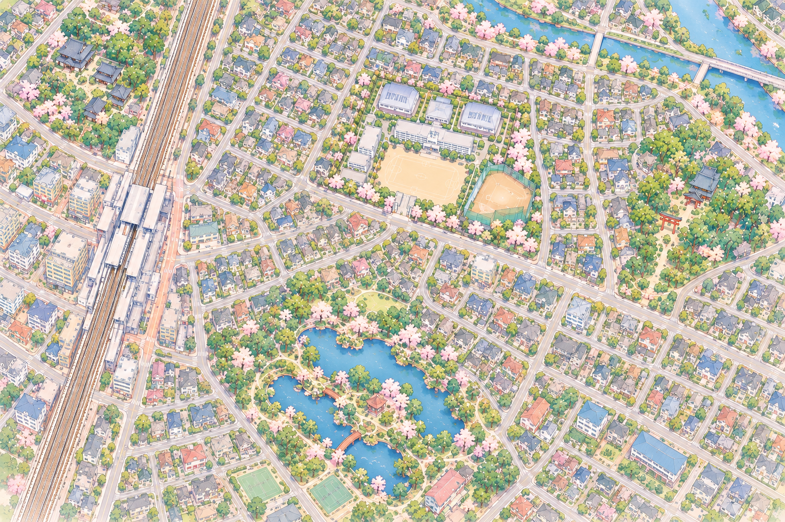

学校について
埼玉県にある架空の県立高校。物語の舞台となる学校です。
SAITAMA, JAPAN
埼玉県立
SEIREI HIGH SCHOOL
青い空の向こうへ。
♪ SEIREI ORIGINAL SOUNDTRACK
CLICK TO ENTER
SEIREI HIGH SCHOOL / VOLLEYBALL CLUB
仲間と声を重ね、最後の一球まであきらめない。
青嶺高校バレーボール部のページへようこそ。
ABOUT OUR CLUB
勝つことだけじゃない。
ここで過ごす時間も、僕らの青春だ。
埼玉県立青嶺高等学校の男子バレーボール部。コートの中では真剣に、コートの外では自分たちらしく。選手とマネージャー、それぞれの立場からチームを支えています。
※このページは創作世界「青嶺高校」の設定紹介サイトです。
OUR MEMBERS
同じコートに立つ、個性豊かな仲間たち。
SCHEDULE
練習も試合も、一日ずつ積み重ねて。
2019年度の学事日程とバレーボール部の予定です。
SEIREI TOWN
点にカーソルを合わせるか、タップしてみてください。

住宅マーカーは物語上の位置です。実際の住所を示すものではありません。
SCHOOL GUIDE
この物語の舞台と、コートの向こう側。
埼玉県にある架空の県立高校。物語の舞台となる学校です。
選手たちとマネージャーが、練習や学校生活を通して日々を重ねています。
プロフィールや関係性は、設定が確定したものから順次追加していきます。